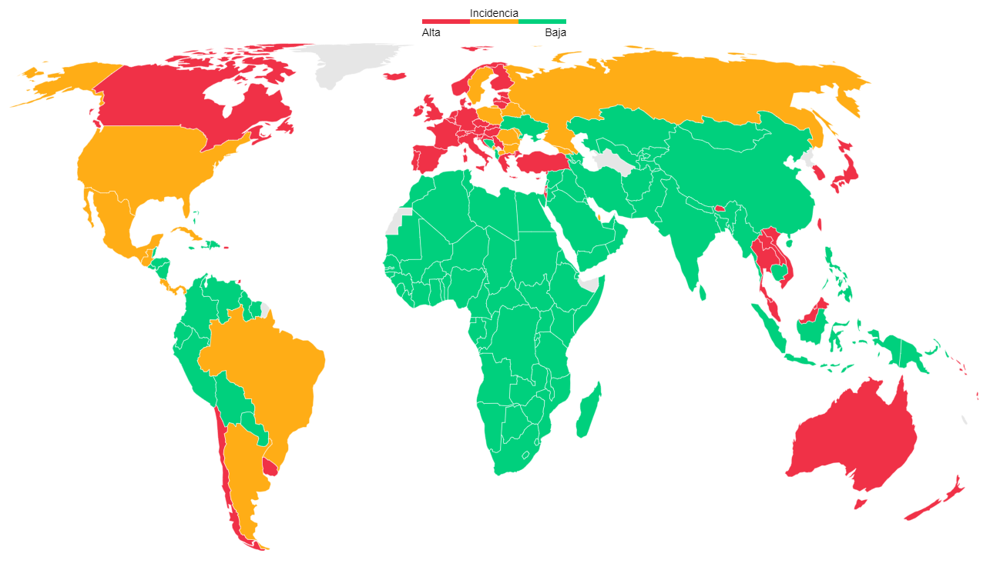

Coronavirus
Los coronavirus son una familia de virus. La infección con estos virus generalmente causa enfermedades respiratorias que van de leves a moderadas, tales como el resfriado común. Algunos coronavirus ocasionan enfermedades graves que pueden llevar a neumonía, e incluso la muerte.
Causas
Existen muchos tipos diferentes de coronavirus. Afectan tanto a humanos como a animales. Los coronavirus humanos comunes causan enfermedades que van de leves a moderadas, tales como el resfriado común. Algunos coronavirus que afectan a los animales evolucionan (mutan) y pasan de animales a humanos. Estos virus pueden entonces propagarse por contacto de persona a persona. A veces, los coronavirus que se propagan de animales a humanos pueden provocar una enfermedad más grave Muchos coronavirus se originan en murciélagos, los cuales pueden infectar a otros animales. Las jinetas propagan el SARS-CoV, mientras que los camellos propagan el MERS-CoV. Se sospecha que el virus SARS-CoV-2 más reciente también se originó en animales. Pertenece a la misma familia de virus que el SARS-CoV, por esta razón tienen nombres similares. Existen muchos otros coronavirus circulando en animales, pero no se han trasmitido a humanos. Una vez que una persona ha sido infectada con el coronavirus, la infección puede transmitirse a una persona sana (transmisión de persona a persona).
Sintomas
Los coronavirus humanos que causan el resfriado común se propagan de persona a persona. Los síntomas se desarrollan entre 2 y 14 días. Estos incluyen: secreción nasal, dolor de garganta, estornudos, congestión nasal, fiebre con escalofríos, dolor de cabeza, dolor en el cuerpo, tos. La exposición a los virus MERS-CoV, SARS-CoV y SARS-CoV-2 puede causar síntomas graves. Estos incluyen: náuseas y vómitos, dificultad para respirar, diarrea, tos con sangre, muerte. La infección grave por coronavirus puede causar: crup, neumonía, bronquiolitis, bronquitis.
Tratamientos
En este momento, no hay un tratamiento específico para la infección por coronavirus, salvo para el SARS-CoV-2. Para una infección por coronavirus que no se deba al SARS-CoV-2, se administran medicamentos solo para aliviar los síntomas. A veces se utilizan tratamientos experimentales en casos graves. Las infecciones leves por coronavirus, como el resfriado común, desaparecerán en pocos días con descanso y cuidados personales en casa.
Mapa infecciones Covid
A continuacion puede ver un mapa con la cantidad de infectador de Covid por pais. Para saber vas de algun pais en especifico, haga click sobre el.
